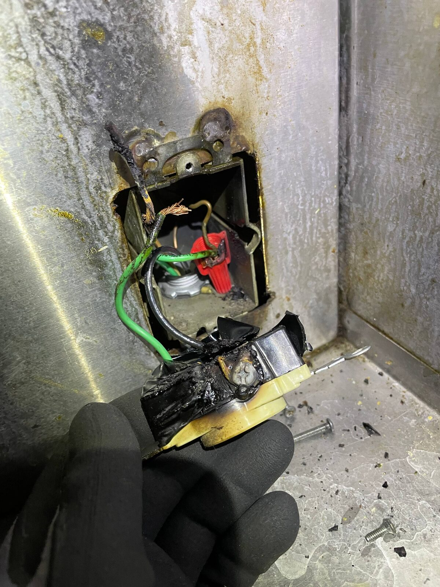
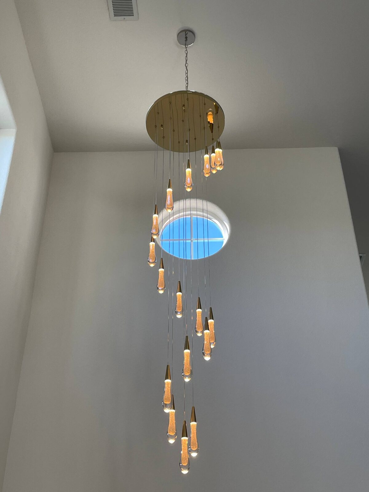

Tripping & Overload
Identify overloads, loose connections, and faulty breakers causing nuisance trips.
Fast diagnostics for tripping breakers, dead outlets, partial outages, and flickering lights in Sacramento, Elk Grove, Folsom, Roseville, and nearby homes.
We trace issues to the source—loose connections, overloaded circuits, failed devices, or aged wiring—so the repair lasts and meets code.
Methodical troubleshooting for safety and reliability.
We start with load checks and visual inspection, then test circuits, devices, and terminations to find the root cause. Repairs are made to code with clear explanations so you know what changed and why.
Identify overloads, loose connections, and faulty breakers causing nuisance trips.

Restore dead outlets, fix GFCI/AFCI trips, and locate hidden faults quickly.

Resolve flickers, buzzing, and switch problems with proper repairs and rewiring.
Older Sacramento homes may have aluminum wiring, bootleg grounds, or mixed remodel wiring. We correct hazards and explain options. For coverage details, view all service areas or see our main electrical services page.
Proper diagnosis prevents repeat issues and keeps your home safe.
Random trips or flickers can signal overloaded circuits or failing connections. Fixing the root cause protects wiring, reduces fire risk, and keeps appliances and lighting stable.
Fast response, clear communication, and clean repairs.
We arrive with test gear, document findings, and make to-code repairs. We also advise when a panel upgrade or circuit addition will solve recurring overloads.
Limit use on that circuit and call us. We’ll check for overloads, loose connections, or failing breakers and repair to code.
Usually not. It can indicate loose connections or shared neutrals. We diagnose the circuit, restore power safely, and correct the issue.
Same-day service is often available in Sacramento. We’ll schedule quickly for urgent outages or safety issues.
Yes. We prioritize potential hazards, inspect connections and breakers, and make safe repairs.
Sacramento, Elk Grove, Rocklin, Folsom, Roseville, Carmichael, Citrus Heights, Natomas, and nearby areas—see our service areas.
Call 916-514-2072 or request a quote—quick, code-compliant diagnostics and repairs for your home.